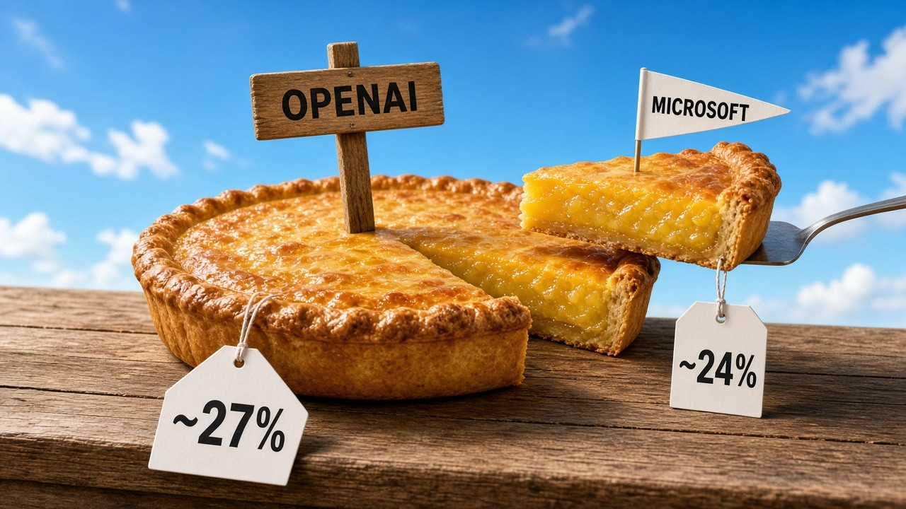

Microsoft's OpenAI stake: ~27% to ~24%

Post
Microsoft's slice of OpenAI got smaller. ~27% as-converted diluted at the Oct 2025 recapitalization. ~24% as-converted at Sep 30, 2026, per Microsoft's 10-Q. TechCrunch: Microsoft did not say why. A stake percent without its basis is half a fact.
A metaphor image, not to scale. The percentages are as worded by the sources: roughly 27 percent on an as-converted diluted basis (Oct 2025); an approximate 24% interest on an as-converted basis (Sep 30, 2026). The two bases are worded differently, so read the change as Microsoft's own before and after. Ownership, not control.
Sources
- Microsoft Form 10-Q, quarter ended Sep 30, 2026 (SEC EDGAR): https://www.sec.gov/Archives/edgar/data/789019/000119312526436133/msft-20260930.htm
- TechCrunch, Oct 28, 2026: Microsoft recorded $10 billion in revenue from OpenAI: https://techcrunch.com/2026/10/28/microsoft-recorded-10-billion-in-revenue-from-openai/
- Microsoft blog, Oct 28, 2025: The next chapter of the Microsoft-OpenAI partnership: https://blogs.microsoft.com/blog/2025/10/28/the-next-chapter-of-the-microsoft-openai-partnership/
Made to go with a post by @iggym. Not investment advice.